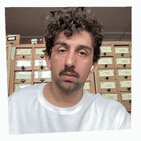

Иван Санников

Контент-стратег и редактор с бэкграундом в SMM и креативе. Пишу текст, придумываю концепции, слежу за голосом бренда и тем, что волнует людей.
Хочу делать продукты ближе к людям и настоящей жизни, ищу работу в редакции или маркетинге большого сервиса.
Портфолио в Figma →01
сейчас
- Работаю в Mail, пишу промо, пуши, письма + спецпроекты — от идеи до прода
- Настраиваю процессы, делаю исследования, помогаю коллегам
02
что оставляю после себя в Mail
- Голос бренда в виде плагина в Figma с удачными примерами и гайдами. Пополняется ai-агентом и помогает редактору писать, когда тот работает над макетом, а не лежит мёртвой пдфкой
- Чатик трендвочинга — находил и переводил тренд-репорты, проводил встречи с маркетологами, дизайнерами и редакторами. Расширяли кругозор и находили идеи для спецпроектов
- Скил для ресайза текста на несколько форматов — агент с ним может зайти в Figma и растащить текст на много разных баннеров и модалок
- Культуру тестирования директ-коммуникаций. Проводил и презентовал тесты пушей и тем. Ввёл курс на то, что каждый запуск — это исследование
03
Опыт работы
Mail, креативный редактор
С февраля 2024 (2 года и 10 месяцев)
Коммуникации Почты, Облака, подписки Mail Space. Пишу лендинги, письма, пуши, баннеры. Делаем спецы в креативной команде. Сделал голос бренда с коммуникационными принципами Mail, помогаю выстраивать единый язык продукта.
ЮMoney — креативный редактор
2021 — 2024 (2 года и 8 месяцев)
Писал сначала для b2b, потом для b2c: лендинги, письма, презентации, баннеры и пуши. Иногда подхватывал продуктовые тексты и внутренние коммуникации.
- Сделал библиотеку повторяющихся продуктовых формулировок
- Вместе с дизайнером переделал шаблоны писем
- Написал гайд по неймингу продуктов и сервисов
- Лидировал брейнштормы
Институт гастрономии — копирайтер, SMM, маркетолог
2020 — 2021 (1 год и 3 месяца)
- Вёл аккаунты в соцсетях, делал короткие видео и тейковеры вместе со студентами
- Отвечал за тексты и рекламу: презентации, сценарии роликов, лендинги
- Ставил задачи дизайнерам, видеографу и студентам-помощникам
- Придумывал и настраивал рекламные кампании
Вираж — SMM
2019 — 2020 (10 месяцев)
Вёл соцсети хозяйственных магазинов. Снимал обзоры инструментов с мастерами, придумывал спецпроекты и форматы вроде битв снегоуборочной техники, работал с подрядчиками по видео.
До 2019
Фриланс в SMM и копирайтинге, местное рекламное агентство, письма для обувных магазинов, сценарии корпоративных фильмов.
04
Фоном
Соорганизовывал сообщества, сайт-специфик выставки и ярмарки художников, писал текстовые квесты, один раз очень сильно упал на велосипеде.
Веду канал про то, что не работает: t.me/etonerabotaet, про смешную брендовую паль: t.me/NORSEFASH, про Дарксоулс в настоящей жизни: t.me/darksoulsirl, подумываю реанимировать канал с плохими 3Д-сканами машинок: t.me/tachq